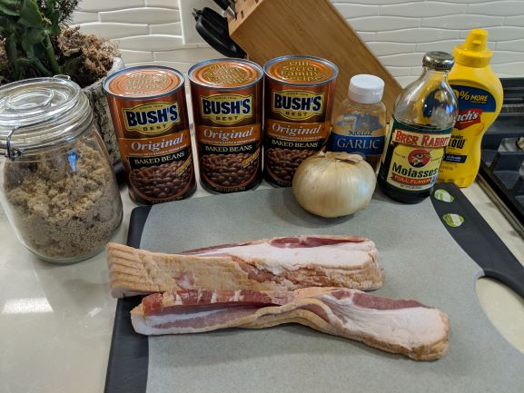

I learned thios recipe trom the couson of one fo my college friends back in Nashville Tennessee. We had an amazing 4th of July feast which included this recipe and some bratwurst like these Wisconsin Beer Brats
Indications
Prep Time: 10 minutes
Cook time: 3h hours
Servings: 12
Ingredients
- 1LB Bacon chopped
- 3 Cans Bush's Original Baked Beans
- 1 Walla Wall Onion chopped
- 3 ground garlic cloves
- 4 Tablespoons of mustard
- 3 Tablespoons of molasses
- 4 Tablespoons of brown sugar
Directions
- Cook bacon util it is mostly cooked, the drain most of the grase and put aside.
- Cook onion in remaining bacon grase.
- Combine onions and bacon, then add garlis, cook for a few more minutes.
- Add beans and get up to simmer temperature.
- Add mustad until your beans are nice and yellow.
- Add molasses until color darkens again.
- Add brown sugar until properly sweet.
- Simmer for a long time, occasionally stirring
Expert Tips
Burning off most of the liquid gives you nice, hearty, sticky beans. If the beans get too dry, you can always add beer!